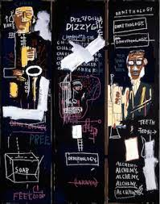

226. Horn Players. Jean-Michel Basquiat. 1983 CE. Acrylic and oil paint stick on 3 canvas panels.
- Form
- Flattened, darkened background; flat patches of color; thick lines; text
- Heads seem to float over outlined bodies and dissolve as the eye goes down the body
- The focus is on contrast and juxtaposition, not on balance or scale
- Soe traditional forms: triptych, canvas, oil paint
- Content
- The painting glorifies African-American musicians; in flanking wings there is a salute to jazz musicians Charlie Parker and Dizzy Gillespie
- The words painted onto the canvas are those attributed to the musicians
- Words painted onto the canvas are those attributed to the musicians
- Words such as “soap” critique racism
- Gillespie used meaningless words “DOH SHOO DE OBEE” in improvisational , or scat, singing
- Context
- Jean-Michel Basquiat was an artist born in Brooklyn, New York, of Puerto Rican and Haitian parents
- The artist rebelled against his middle-class upbringing
- The artist was influenced by graffiti art and street poetry, and in turn he influenced these art forms